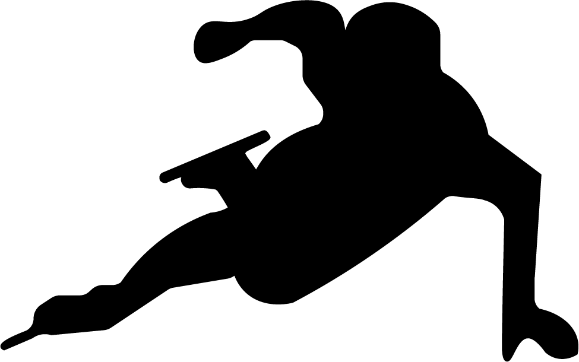
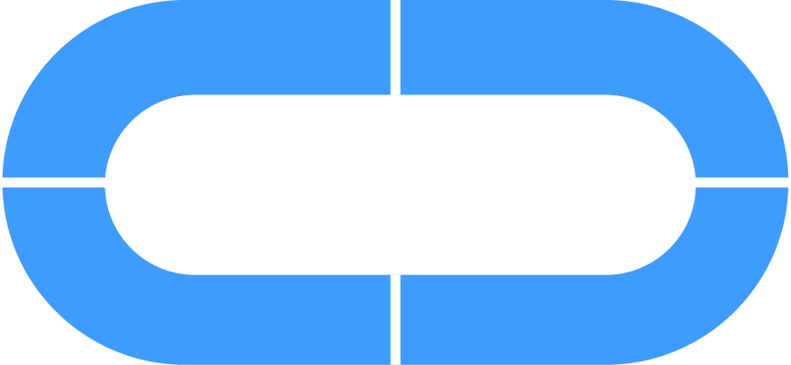

Impact van de verduurzaming
Doordat de langebaan buiten is en niet overdekt, kan de zon schijnen op een deel van de baan. Daardoor is de ijsbaan nu verdeeld in vier delen, waardoor je een bepaald deel kouder kan zetten, dan een andere.
Daardoor hoef je niet de hele ijsbaan kouder te zetten, want het deel in de schaduw hoeft minder koud te zijn. Daardoor heb je dus minder energie nodig.
Daarnaast zijn de ijzeren buizen Veranderd in kunststof, met alkali in plaats van ammoniak.